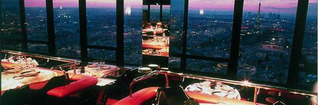

We provides a selection of Paris leading establishments offering French cuisine. Whether seeking meats roast or in sauce, market-fresh vegetables, delicately seasoned fish or traditional French dishes, choose your traditional cuisine restaurant from the prime addresses of Best Restaurants Paris. Consult the detailed sheets of the featured establishments and choose that traditional cuisine restaurant you're looking for. The photos, extracts from the carte and comprehensive practical information will give you a clearer idea of what to expect from the traditional cuisine restaurant where you would like to lunch or dine.

It takes only 38 seconds to rise to the Ciel de Paris on the 56th floor of the Tour Montparnasse in the 15th district. The uppermost restaurant in Europe, towering 200 meters above the city offers a stupendous view. While spotting the capital's famous buildings lying below, Jean-François Oyon will introduce you to his imaginative, tasty and seasonal traditional cuisine. The bar is open until 1pm.